Recopilaciones
Recopilaciones
|
|
|
CD's RECOPILACIONES Y EN VIVO DE KC
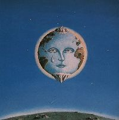 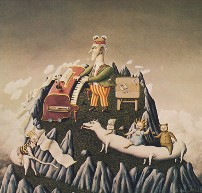
Temas: Epitaph - Cadence and cascade - Ladies of the road - I talk to the wind ("demo" de 1968, con voz de Judy Dyble) - Red - Starless - The night watch - Book of saturday - Peace, a theme - Cat food - Groon (instrumental interpretado por Fripp y los hermanos Giles, anteriormente solo editado en simple en 1970 como lado B de Cat food) - Coda de Larks' tongues in aspic I - Moonchild - Trio (en vivo) - The court of the crimson king . 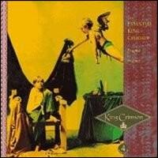 Caja de 4 CD editada en 1991. Temas:
(*): nueva mezcla con voz de Belew (#): nueva mezcla con bajo de Levin 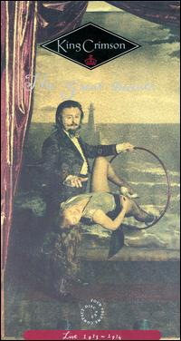 Caja de 4 CD en vivo de 1973-74 (Fripp, Wetton, Bruford y Cross), editada en 1992. Contiene los principales temas de los discos "Larks' tongues in aspic" y "Starless and bible black", y el tema Starless, que luego se grabaría en estudio para el album "Red". Hay más de una versión de varios temas. Contiene también varias improvisaciones (algunas fueron remezcladas para editarlas en discos de estudio: We'll let you know en "Starless and bible black" y Providence en "Red"), un tema nunca editado en disco de estudio llamado Doctor Diamond (letra) y 3 temas de formaciones anteriores (el caballito de batalla 21st Century schizoid man, Peace a theme y una versión rockera de Cat food). Las grabaciones son de los siguientes recitales: Glasgow (Escocia, octubre 23 de 1973), Zurich (Suiza, noviembre 15 de 1973), Pittsburg (USA, abril 29 de 1974), Toronto (Canadá, junio 24 de 1974), Pennsylvania (USA, junio 29 de 1974) y Providence (USA, junio 30 de 1974). En el libro hay una nota de Fripp sobre esta formación y su disolución.
En 2007 esta recopilación se relanzó remasterizada pero dividida en dos volúmenes de dos discos cada uno.
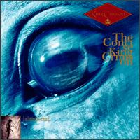 Recopilación 1969-1984, editado en 1993. Temas: 21st Century schizoid man - Epitaph - The court of the crimson king - Cat food - Ladies of the road - Starless - Red - Fallen angel - Elephant talk - Frame by frame - Matte Kudasai - Heartbeat - Three of a perfect pair - Sleepless
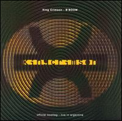 Doble CD grabado en vivo en Argentina (excepto Heartbeat, grabado en Córdoba, el resto es de las presentaciones en el teatro Broadway de Buenos Aires), cuando KC presentó su nueva formación en octubre de 1994: Fripp y Belew en guitarras, Levin y Gunn en bajo y stick, Bruford y Mastelotto en batería y percusión. Hay temas de la formación 1973-74 (Red, The talking drum -donde la guitarra de Belew simula el violín que sonaba en la versión original-, y Larks' tongues in aspic II), de la etapa 1981-84 y de la nueva formación, que luego serían incluidos en el álbum "Thrak".
Nota: en la cubierta del CD se lee: "Official bootleg" (pirata oficial). Esto es porque la música de estos discos se sacó de una cinta digital que grabó el sonido antes de que entrara a la mezcladora de la consola. ¿Cuáles fueron las razones para editarlos así? Fripp lo explica en el interior de la cubierta: una compañía pirata italiana envió un agente a Sudamérica para grabar presentaciones de 3 grupos, entre ellos King Crimson. El disco pirata resultante de los recitales del Broadway de Buenos Aires empezaron a venderse caros en Inglaterra, con un sonido deplorable. En respuesta a esto, y sabiendo que muchos seguidores quieren escuchar grabaciones lo más fidedignas posible de cómo era estar en la audiencia del teatro, se editó este pirata oficial, con más cuidado y mucho mejor sonido. 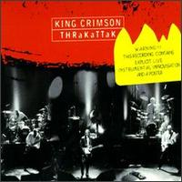 Editado en 1996, con improvisaciones dentro del tema Thrak, durante la gira del sexteto en 1995 por USA y Japón. Temas: Thrak - Fearless and highly thrakked - Mother hold the candle steady while I shave the chicken's lip - Thrakattak I - The slaughter of the innocents - This night wounds time - Thrakattak II - Thrak (reprise).
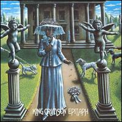 Doble CD editado en 1997, con grabaciones en vivo del primer KC en 1969 (Fripp, Lake, Giles y McDonald). Varios de los temas nunca fueron editados en discos de estudio. Hay más de una versión de algunos temas. CD 1: sesiones en la BBC: 21st Century schizoid man - The court of the crimson king - Get thy bearings - Epitaph. / Fillmore East, Nueva York: A man, a city - Epitaph - 21st. Century... / Fillmore West, San Francisco: Mantra - Travel weary capricorn - Travel bleary capricorn (improv.) - Mars. CD 2: Fillmore West, San Francisco: The court of the Crimson King - Drop in - A man, a city - Epitaph - 21st. Century... - Mars.
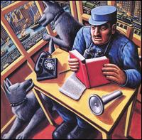 Doble CD editado en 1997, con la grabación en vivo del recital de Amsterdam del 23 de noviembre de 1973, con la formación Fripp, Wetton, Bruford y Cross.
Nota: algunos de los temas grabados en este recital fueron remezclados en estudio y formaron parte del album "Starless and bible black" de 1974 (Fracture, Starless and bible black, Trio, y la primera parte de The night watch). 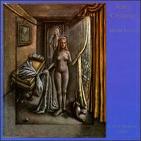 Doble CD editado en 1998, con la grabación en vivo del recital de Montreal del 11 de julio de 1984 (el último de la formación de los '80, con Fripp, Belew, Bruford y Levin).
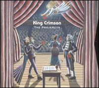 Caja de 4 CD con temas en vivo de los cuatro subgrupos de King Crimson, denominados ProjeKcts, de recitales en Londres y ciudades de USA durante 1998 y 1999. Editado en 1999. Cada CD tiene temas de un ProjeKct.
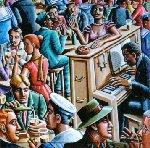 CD 1 : ProjeKct One (Fripp, Bruford, Gunn, Levin). Mejores pistas: 1ii2, 2ii3, 3i2, 3ii2.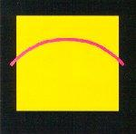 CD 2: ProjeKct Two (Fripp, Belew, Gunn). Mejores pistas: Sus-tayn-Z, Live groove.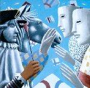 CD 3: ProjeKct Three (Fripp, Mastelotto, Gunn). Mejores pistas: Masque 4, Masque 13.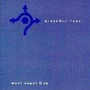 CD 4: ProjeKct Four (Fripp, Mastelotto, Gunn, Levin).Mejores pistas: Ghost 1.3, Deception of the thrush, ProjeKction.
También editado en 1999, el CD Deception of the thrush es una síntesis de la caja (algo así como The best...; incluso tiene la misma portada). 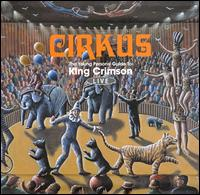 The young persons' guide to King Crimson live (Guía de King Crimson en vivo de personas jóvenes) Doble CD editado en 1999, con temas en vivo de diferentes formaciones de KC entre 1969 y 1998; se incluyen un tema de ProjeKct One (P1) y dos de ProjeKct Two (P2).
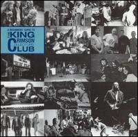 The beginners guide to the King Crimson Collectors Club(Guía para principiantes del club de coleccionistas de King Crimson). Editado en 2000, contiene temas en vivo de distintas formaciones, editados anteriormente en CD's del club de coleccionistas de King Crimson.
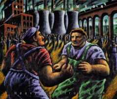 Triple CD en vivo de la gira europea de 2000, con la formación Fripp, Belew, Gunn y Mastelotto. Los discos 1 y 2 tienen inmejorables versiones de temas de los discos "The construKction of light" (grabado ese año) y "Thrak" (impresionantes performances de Vrooom y de Sex, sleep, eat, drink, dream), y algunas improvisaciones. En el disco 2 hay además dos temas a destacar: una hermosa versión acústica del tema Three of a perfect pair (solo la voz y la guitarra acústica de Belew), y una versión del tema Heroes, de Bowie y Eno (tema bien conocido por Fripp y Belew; Fripp participó en la grabación de la versión original en 1977 y Belew lo tocó en vivo con Bowie en las giras de 1978 y 1990); y se incluye un video de un concierto en vivo para ver en PC, de 45' de duración. Casi todos los temas del disco 3 son improvisaciones (la mayoría excelentes), que muestran el legado de los ProjeKcts, aún fresco; uno de ellos está hecho en base al tema Tomorrow never knows de los Beatles (seguramente fue idea de Belew).
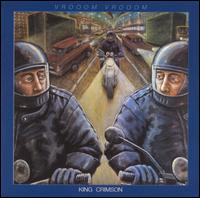 Doble CD en vivo editado en 2001, con la formación del sexteto Fripp, Belew, Levin, Bruford, Gunn y Mastelotto. Una joya para destacar: después de muchos años, KC vuelve a tocar en vivo el clásico 21st. Century schizoid man, siempre vigente, con una formación diferente a las de versiones anteriores. Y es una excelente versión, con una de las guitarras simulando el saxo de la versión original.
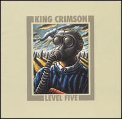 Level fiveEn vivo de la gira del verano 2001 en USA y México con la formación Fripp, Belew, Gunn y Mastelotto. Temas: Dangerous curves (junto con los dos temas siguientes, fue grabado en 2003 para el album "The power to believe") - Level five (en esos momentos se llamaba Larks' tongues in aspic V; al grabarse para el disco "The power to believe" se le cambió el nombre a Level five) - Virtuous circle (cuando se grabó en estudio para el album "The power to believe" fue rebautizado como The power to believe II ) - The construKction of light - The deception of the thrush - ProjeKct 12th and X (improv.)
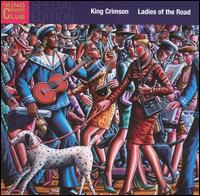 Doble CD en vivo de recitales de 1971-72 (Fripp, Collins, Burrell y Wallace), editado en 2002. CD1: Pictures of a city - The letters - Formentera lady - Sailor's tale - Cirkus - Groon - Get thy bearings - 21st Century schizoid man - The court of the Crimson King. CD2: solos de saxo y guitarra tocados con el tema 21st Century schizoid man en diferentes recitales.
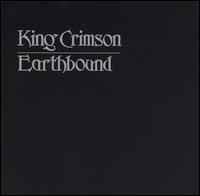 Earthbound (Terrestre)En vivo de la gira por USA en febrero-marzo de 1972 (Fripp, Collins, Burrell y Wallace), lanzado originalmente en vinilo en junio de 1972, editado en CD en 2002. Temas: 21st Century schizoid man (Delaware, febrero 11) - Peoria (improv., Peoria, marzo 10) - Sailor's tale (Jacksonville, febrero 26) - Earthbound (improv., Orlando, febrero 27) - Groon (Delaware, febrero 11). Definido por Fripp como el primer "pirata oficial" del rock (se grabó con un grabador común de caset). No tiene buena calidad de sonido, pero muestra buenas improvisaciones (donde se destaca el virtuosismo de Mel Collins con el saxo) y un hermoso solo de Fripp en Sailor's tale. También es muy buena la versión de 21st Century schizoid man.
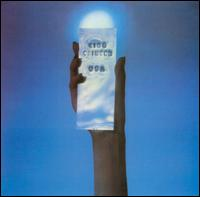 En vivo de la gira por USA en 1974 (Fripp, Wetton, Bruford y Cross), lanzado originalmente en vinilo en 1975, editado en CD en 2002 con dos temas agregados (Fracture y Starless). Todos los temas son del recital de Asbury Park (junio 28 de 1974), salvo 21st Century..., del recital de Providence (junio 30). Temas: Walk on/No pussyfooting - Larks' tongues in aspic II - Lament - Exiles - Asbury Park (improv.) - Easy Money - 21st Century schizoid man - Fracture - Starless. Nota: aparece como invitado Eddie Jobson, quien en estudio agregó violín en los temas Lark's... y 21st Century..., y piano en Lament, sobre partes tocadas por Cross en vivo, por deficiencias en la grabación original. Excelente disco en vivo, con 2 joyas a destacar: Asbury Park es una de las mejores improvisaciones de esta formación; a pesar de percibirse en el fondo y a lo lejos el melotrón de Cross (se disminuyó su volumen en la mezcla para este disco), es una típica pieza de power-trio. Y la otra gema es la versión de Easy money; después de la primera parte potente y cantada, hacen una improvisación en modo lento y suave, totalmente diferente a la versión original. Estos dos temas están cortados en este disco, pero están completos en el album "Casino", con el recital de Asbury Park tal como fue tocado (sin mezcla posterior y por lo tanto sin la participación de Jobson), editado en 2005 por DGM. 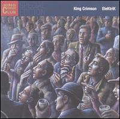 En vivo en Japón en 2003 (Fripp, Belew, Gunn y Mastelotto). Temas: Introductory soundscapes - The power to believe I: A cappella - Level five - ProzaKc blues - EleKtrik - Happy with what you have to be happy with - One time - Facts of life - The power to believe II: Power circle - Dangerous curves - Larks' tongues in aspic IV - The world's my oyster soup kitchen floor Wax Museum
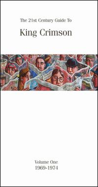 Caja de 4 cd recopilación, editada en 2004. CD 1 (en estudio 1969-1971): 21st Century... - I talk to the wind - Epitaph - Moonchild - The court... - Peace, a theme - Cat food - Groon - Cadence and cascade - In the wake... - Ladies of the road - The sailor's tale - Islands - Tuning up - Bolero CD 2 (en vivo 1969-1971): The court... - A man, a city - 21st Century... (1969) - Get thy bearings - Mars - Picture of a city - The letters - The sailor's tale - Groon - 21st Century... (1972) CD 3 (en estudio 1972-1974): Larks' I - Book of saturday - Easy money - Larks' II - The night watch - The great deceiver - Fracture - Starless - Red - Fallen angel - One more red nightmare CD 4 (en vivo 1972-1974): Asbury Park - The talking drum - Larks' II - Lament - We'll let you know - Augsburg (improv) - Exiles - Easy money - Providence - Starless and bible black - 21st Century... - Trio
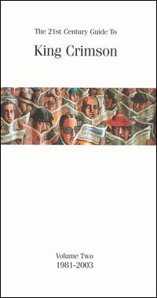 Caja de 4 cd recopilación, editada en 2005. CD 1 (en estudio 1981-1984): Elephant Talk - Frame By Frame - Matte Kudasai - Thela Hun Ginjeet - The Sheltering Sky - Discipline - Heartbeat - Waiting Man - Neurotica - Requiem - Three Of A Perfect Pair - Sleepless . Bonus (en estudio 1982-2004): The King Crimson Barber Shop - Form No. 1 - Bude - Potato Pie - Bude - Einstein's Relatives CD 2 (en vivo 1982-1984): Entry Of The Crims - Lark's Tongues In Aspic Part III - Thela Hun Ginjeet - Matte Kudasai - The Sheltering Sky - Neal And Jack And Me - Indiscipline - Sartori In Tangier - Frame By Frame - Man With An Open Heart - Waiting Man - Sleepless - Three Of A Perfect Pair - Discipline - Elephant Talk CD 3 (en estudio 1995-2003): VROOOM - Coda: Marine 475 - Dinosaur - Walking On Air - B'Boom - THRAK - Fearless And Highly THRaKked - Sex Sleep Eat Drink Dream - Radio II - The Power To Believe I - Level Five - Eyes Wide Open - Elektrik - Facts Of Life: Intro - Facts Of Life - The Power To Believe II - Happy With What You Have To Be Happy With - The Power To Believe III - The Power To Believe IV CD 4 (en vivo 1994-2003): VROOOM VROOOM - Neurotica - Prism - One Time - Larks' Tongues In Aspic: Part IV - ProzaKc Blues - The Construction Of Light - Frakctured - The World's My Oyster Soup Kitchen Floor Wax Museum - Sus-Tayn-Z - X-Chayn-Jiz - The Deception Of The Thrush - 2 ii 3
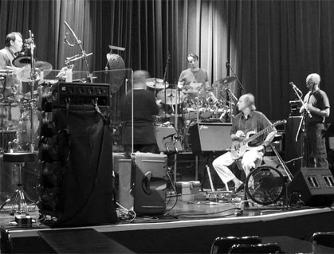 Park West, ChicagoEn vivo en agosto de 2008 con la formación quinteto que realizó un regreso fugaz (Fripp, Belew, Levin, Mastelotto y Gavin Harrison, recién incorporado a la corte del rey). Excelente performance. https://www.dgmlive.com/albums/park-west-chicago-united-states-2
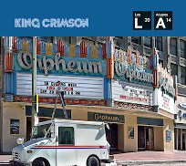 Live at The OrpheumEn vivo de la gira por USA en septiembre/octubre de 2014 de la nueva formación septeto (Fripp, Jakszyk, Levin, Collins, Harrison, Mastelotto, Rieflin). Grabaciones de los días 30 de septiembre y 1 de octubre en el teatro Orpheum de Los Ángeles. Por fin Fripp se decidió a tocar temas de las primeras épocas; no lo había hecho nunca desde los '70, ni siquiera durante la minigira del 40 aniversario de la banda en 2008. Quizás pesó el hecho de que se integraran al grupo Mel Collins, miembro de la encarnación de 1971/72, y Jakszyk, quien cantara y tocara muchos temas de los primeros discos de KC formando parte (junto a Collins también) de la 21st Century Schizoid Band, durante los primeros años del siglo 21. No habían sonado instrumentos de viento en KC en vivo desde 1972, y en estudio desde 1974.
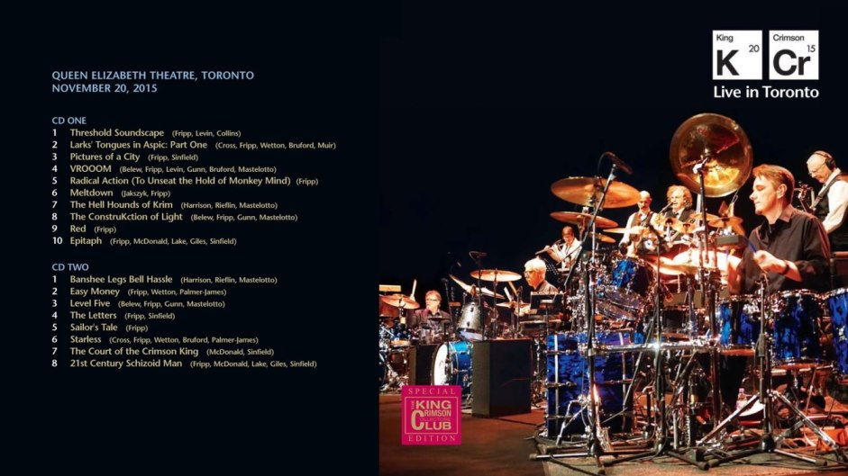 Excelente album doble del recital en Toronto (Canadá) del 20 de noviembre de 2015. Esta encarnación septeto reinterpreta en vivo clásicos de diferentes épocas, pero principalmente de los primeros años: KC no tocaba Epitaph desde fines del '69, The court of the Crimson King desde principios del '71, The letters desde fines del '71, Pictures of a city y Sailor's tale desde principios del '72, Easy money y Larks' I desde mediados del '74. También integran piezas nuevas, como las firmadas por los 3 bateristas, que son de sólo percusión. Otros temas nuevos son Radical action (instrumental compuesto por Fripp, bien crimsoniano clásico) y Meltdown (cantado, compuesto por Fripp y Jakszyk; la música es del estilo comenzado con la pieza Discipline en 1981, con un entretejido formado por las guitarras), tocados enganchados como si fueran dos partes de una misma pieza. El sonido es de muy buena calidad, mucho mejor que el del mini album Live at The Orpheum del año anterior. 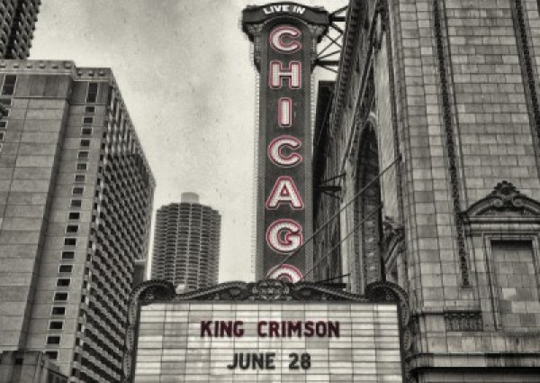 Live in ChicagoGrabado en vivo en Chicago el 28 de junio de 2017 durante la primera parte de la gira por USA, lanzado en octubre del mismo año en forma digital desde el sitio web de DGM. En esta gira la formación fue un octeto, y Rieflin se convirtió en el primer tecladista a tiempo completo de la historia de la banda. Temas: Larks' tongues in aspic Pt I - Neurotica - The errors - Cirkus - The Lizard suite - Fallen angel - Larks' tongues in aspic Pt II - Islands - Pictures of a city - Indiscipline - The construKction of light - Easy money - The letters - Interlude - Meltdown - Radical action II - Level five - Starless - Heroes - 21st Century schizoid man Excelentísimo album, perfecto. Hermosas versiones de los temas agregados al repertorio por esta formación: la suite Lizard, Islands, Fallen angel (se agregó en homenaje a Wetton, fallecido a comienzos del año), y los primeros temas de los '80 en incorporarse: Neurotica e Indiscipline, en los que Jakko evitó el canto-hablado de Belew (en Neurotica solo cantó el estribillo, y el saxo hizo la parte hablada, por lo que la primera mitad del tema suena más jazzera; en Indiscipline Jakko reemplazó el recitado con una exquisita melodía, hecha a dos voces en algunos tramos). Muy bueno el nuevo tema presentado, The errors, en el que Fripp usó un fraseo similar al que usó en Sunday all over the world de 1991.
KCCC: desde 1998 el sello DGM edita discos en vivo de todas las formaciones KC (incluyendo los ProjeKcts) para los abonados al King Crimson Collectors Club (a cambio de un abono anual se reciben entre 3 a 5 discos por año). Por calidad de sonido, temas interpretados, calidad en la ejecución y versiones novedosas de algunas piezas, recomiendo los siguientes discos de la colección:
DGM también ofrece venta de discos virtuales (en formatos flac o mp3) de recitales de KC y de Fripp solista de distintas épocas, para descargar desde su sitio web oficial (www.dgmlive.com). |